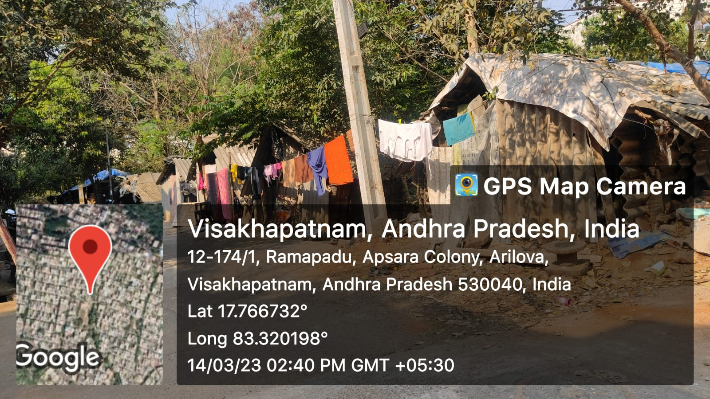

Kobbarithota

Kobbarithota Slum is an informal settlement located in the Greater Visakhapatnam Municipal Corporation (GVMC) area in the state of Andhra Pradesh, India. It is a densely populated area characterized by makeshift houses made of temporary materials such as tin sheets, plastic sheets, and bamboo
Major Problems
- Overcrowded and Unsanitary Living Conditions: The houses in Kobbarithota Slum are often overcrowded, with multiple families sharing small living spaces. This leads to unhygienic conditions, lack of privacy, and increased risk of disease outbreaks. The absence of proper sanitation facilities and waste management systems further exacerbates the problem, leading to poor sanitation and hygiene practices.
- Limited Access to Healthcare: Access to healthcare services is often inadequate in Kobbarithota Slum. The lack of proper healthcare facilities, qualified medical personnel, and affordability issues can result in inadequate healthcare, leading to health problems going untreated or worsening.
- Education Disparities: Access to quality education is limited in Kobbarithota Slum. Lack of proper schools, trained teachers, and educational resources can hinder the educational opportunities for children in the slum, leading to lower literacy rates and limited prospects for upward mobility.